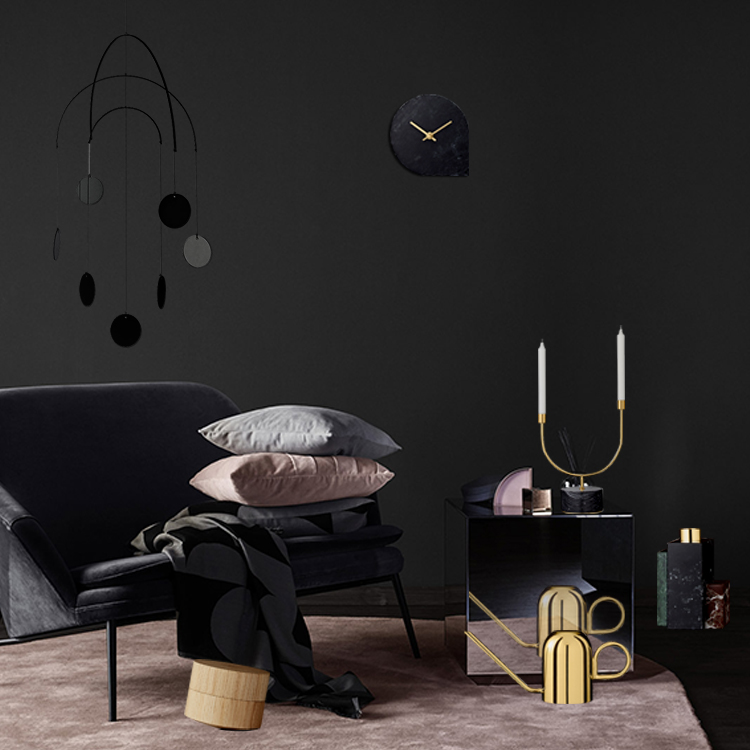
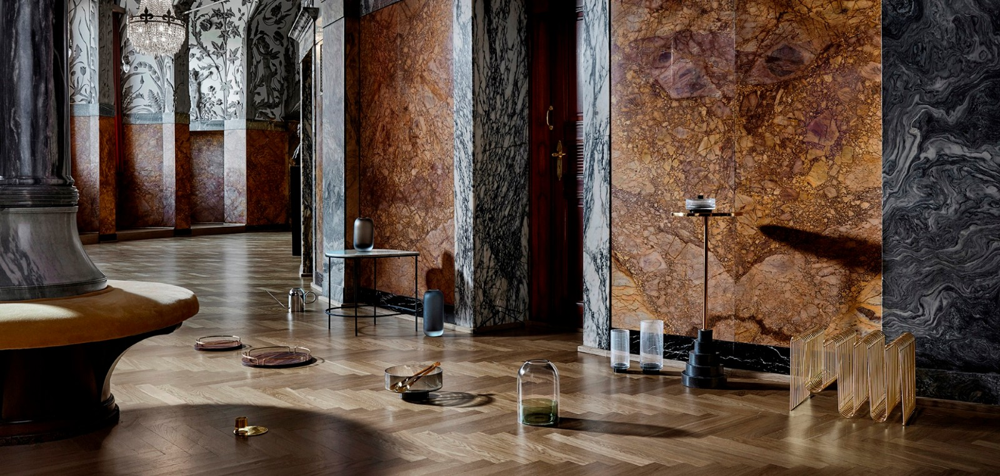
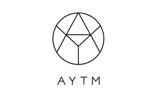
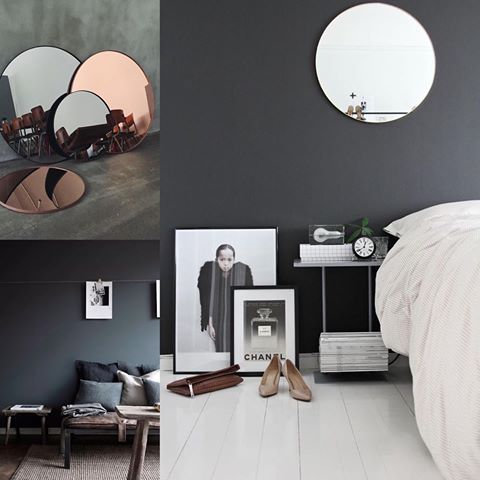
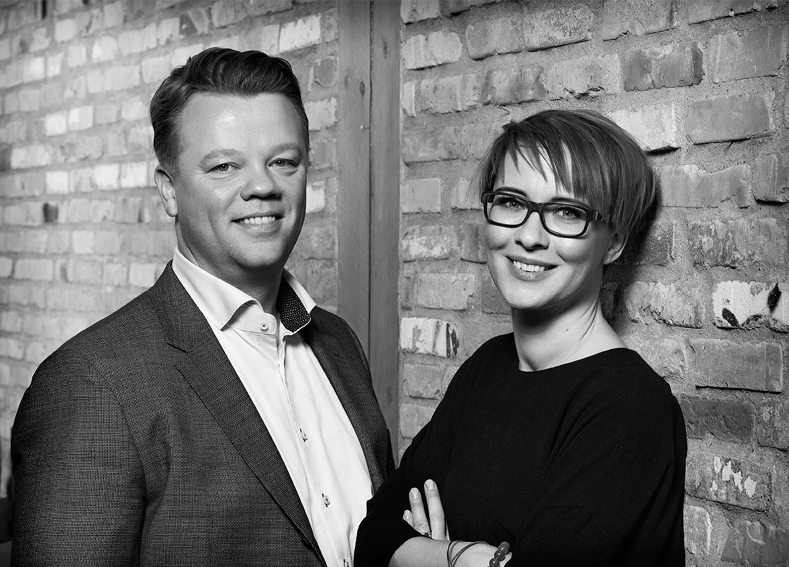
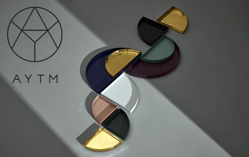
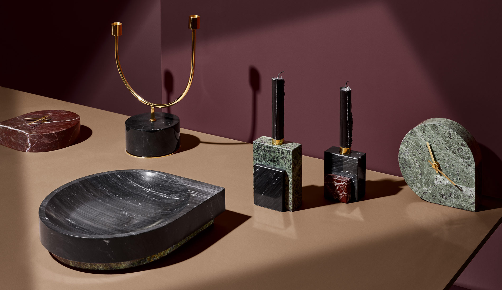
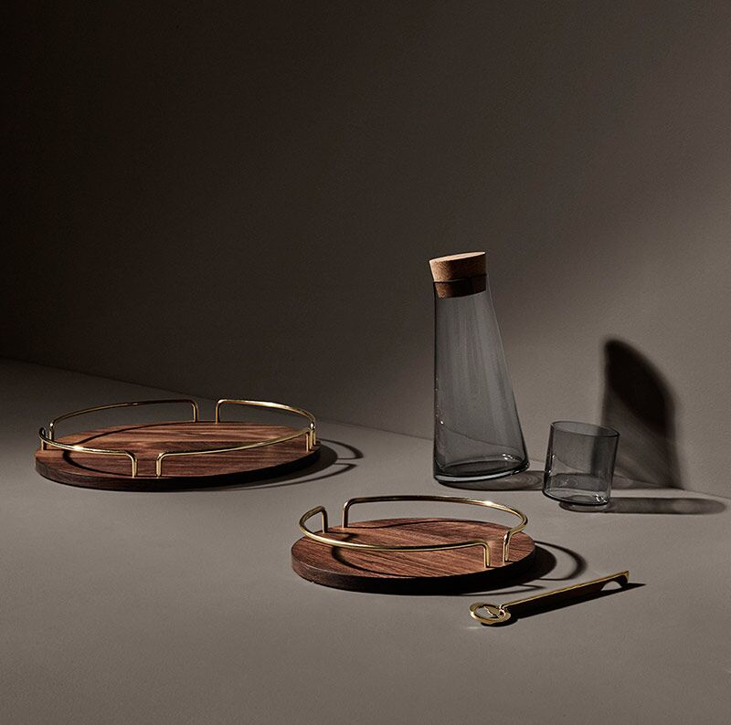

AYTM : 永不过时的丹麦好品味
作者：良仓

极简主义、强调功能，是北欧的设计风格。
而丹麦在这基础上，又增加了恬静，和富有韵味的内涵。


AYTM是个年轻品牌，2015年8月才成立。不过，它的背后是自2004年以来，成功经营Gran Living ApS的Kathrine和Per Gran Hartvigsen夫妇，并集合了以设计师Anne Stensgaard为 首的、一个激情四溢和才华横溢的团队。

AYTM专注奢华家庭内装，设计繁复而又优雅，产品无一都是高品质的材料，和精益求精的细节。
而它推出的第一个系列的目的，则是通过更具表现力的方式激励人们更多地了解北欧设计。

正如创始人Kathrine Gran Hartvigsen所说： ”我们认为我们可以为丹麦设计添加新的东西！ 因此，我们从一开始就投入了大量资金。 我们非常高兴向全世界展示AYTM，我们相信大家 会和我们一样兴奋。 ”
目前，AYTM的家居室内设计主要是为了餐厅，客厅和厨房而设计，但是这个范围将会扩展到其他房间。

“我们希望每一件作品都是独一无二的，引人注目的，但同样重要的是，所有的产品一起看起来是 一个集合，并创造一个壮观的气氛。”
今天，良仓为大家带来的便是AYTM品牌下的几款商品，无一例外，每一个都简约、精致、又实用。
厨房&餐厅
我们常说
唯美食与爱不能辜负
无论是做一餐还是吃一顿
都值得用心对待
美食不如美器，盛托食物的托盘，无论是黄铜、玫瑰金光泽的镜面还是胡桃木，都尽显低调 奢华；100%黄铜制成的开瓶器，精致得让人爱不释手；同为大理石烛台，一款弧线优美， 另一款三色拼接，风格不同，却一样饱了眼福；倾斜的调料罐，怎么看怎么想厨房里的小顽 皮，给调料也增添一抹趣味；菜板选用耐腐蚀的优质橡木，是家用厨具中最佳的天然材料。
①
UNITY 黄铜托盘
